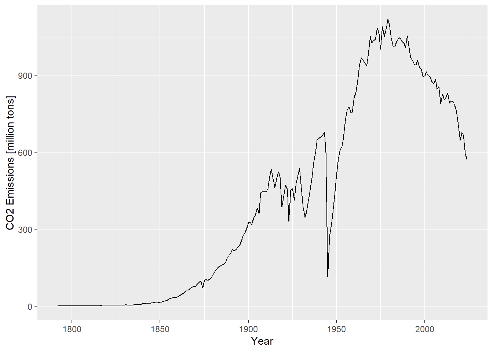
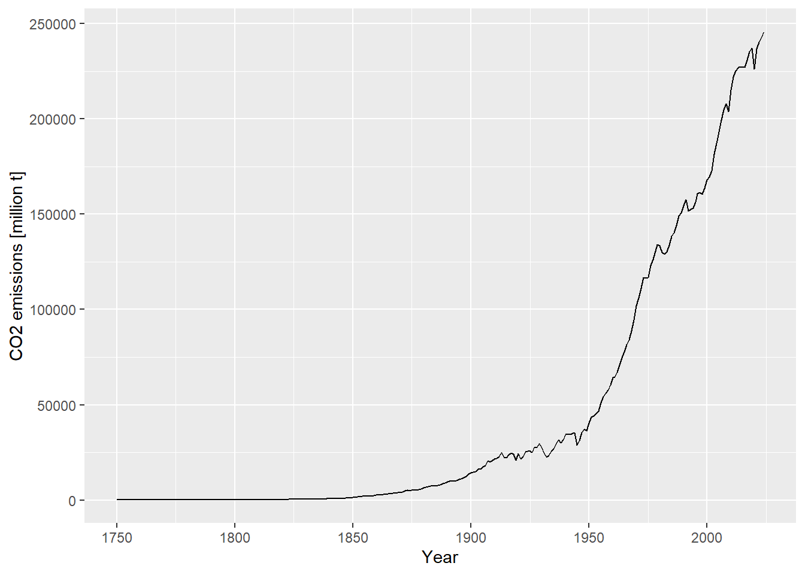

values <- c(13.42203, 19.8129, 17.2293, 9.3129, 12.7937)Data Wrangling
In this chapter, we will cover so-called data wrangling. So far, all data has been (mostly) in an appropiate format for further analysis - in real-world data, that is often not the case. We therefore often must adjust the format of our data. A few key techniques for this will be covered in this section.
This chapter will also introduce the dplyr package from the “tidyverse” that is commonly used for data wrangling in R. It is up to you whether you prefer the tidyverse approach or the base R version!
The Tidyverse
The tidyverse is not a single package, but a collection of packages (https://tidyverse.org/) with a similar design philosophy that are designed to work well together. You have already learned about lubridate and ggplot2: both are part of the tidyverse. You can install and load the entire tidyverse (install.packages("tidyverse")) or just individual packages.
A core principle of the tidyverse is so-called “piping”. While the tidyverse can be used without pipes (and pipes without the tidyverse), tutorials/applications of tidyverse packages will usually use pipes and the syntax is designed with piping in mind. Piping used the so-called pipe operator |> . With piping, your code is read left-ro-right instead of inside out.
Let’s consider an example:
Without piping, if we want to apply multiple functions, they are nested inside each other and then read inside out. In this case, our code says: take the vector values, extract the maximum, and round it to 1 digit.
round(max(values), digits = 1)[1] 19.8Using the pipe operator, we can write the same procedure left-to-right. The piping operator takes the value on the left side (e.g. values) and inserts it as the first argument of the function on the right (e.g. max()). The code below is therefore equivalent to the code above:
values |> max() |> round(digits = 1)[1] 19.8
Note
Instead of the native pipe operator |>, you can also use the pipe operator %>%, originally from the package magrittr but now also included in the tidyverse. Using the magrittr pipe requires loading a package from the tidyverse since it is not included in base R!
Older R code will usually use %>% since |> was only introduced to R in version 4.1. However, you can use them almost interchangeably, and will rarely encounter situations where you must use one specifically (for an explanation on subtle differences see https://r-statistics.co/R-Pipe-Operator-in-R.html). Modern R code usually uses |>, so it will be used in this tutorial.
Introduction to dplyr
The dplyr package (pronounded “deployer”) is part of the tidyverse and intended for data manipulation. It can be used for simple tasks that we already covered in base R (renaming columns; selecting rows…), which will be covered in this introductory section, but is especially useful for summarizing large datasets into key findings (covered later in this chapter).
install.packages("dplyr")library("dplyr")Warning: Paket 'dplyr' wurde unter R Version 4.4.3 erstellt
Attache Paket: 'dplyr'Die folgenden Objekte sind maskiert von 'package:stats':
filter, lagDie folgenden Objekte sind maskiert von 'package:base':
intersect, setdiff, setequal, union
Note
Tidyverse packages like dplyr work with dataframes, but also have their own format called tibble that is the tidyverse’s equivalent to a dataframe. Sometimes, manipulating data with dplyr may turn it into a tibble. Tibbles can be treated the same way in 99% of cases and in this course we will always use the term “data frame” even when an object is technically a tibble. If you are interested in diving deeper, this thread on stack overflow defines the differences, but it is not necessary knowledge for your studies: https://stackoverflow.com/questions/74000054/what-are-the-differences-between-the-data-frame-tribble-and-tibble-functi
For this explanation, we will be using the example dataset annual-co2-emissions.csv from Our World in Data (https://ourworldindata.org). It contains data on annual CO2 emissions in tons for different countries and regions of the world from 1750 to 2024.
emissions_raw <- read.csv("data/annual-co2-emissions.csv")
summary(emissions_raw) Entity Code Year Annual.CO..emissions
Length:29384 Length:29384 Min. :1750 Min. :0.000e+00
Class :character Class :character 1st Qu.:1913 1st Qu.:3.811e+05
Mode :character Mode :character Median :1963 Median :5.081e+06
Mean :1948 Mean :4.202e+08
3rd Qu.:1995 3rd Qu.:5.362e+07
Max. :2024 Max. :3.860e+10 This dataset contains a lot of information (almost 30.000 rows!), but let’s say we want to simply create line plots of the following:
1) The development of Germany’s CO2 emissions over time
2) Total global CO2 emissions per year
It is obvious this information is contained in the data, but right now, it is not easily extractable. We need data wrangling to bring our data frames into a form where we can easily create these plots.
Mutate
“Mutate” simply means creating a new column in a data frame that is a function of another column. For example, we might want to create a new column that holds the CO2 emissions in million tons CO2 for easier readability of our future graphs. Since mutate is a function from the tidyverse, we are using the pipe operator!
In most tidyverse functions, you only need to specify the column name without re-specifying the name of the data frame as the data is “piped” into the function, so there is no need to specify emissions_raw$Annual.CO..emissions within mutate().
# using mutate to create a new column
# note that we need to use the assignment arrow to overwrite
# the original dataframe with the mutated one!
emissions_raw <- emissions_raw |>
mutate(CO2_million = Annual.CO..emissions / 10^6)
head(emissions_raw) Entity Code Year Annual.CO..emissions CO2_million
1 Afghanistan AFG 1949 14656 0.014656
2 Afghanistan AFG 1950 84272 0.084272
3 Afghanistan AFG 1951 91600 0.091600
4 Afghanistan AFG 1952 91600 0.091600
5 Afghanistan AFG 1953 106256 0.106256
6 Afghanistan AFG 1954 106256 0.106256The base R equivalent would be using the $ operator and the assignment arrow.
emissions_raw$CO2_million <- emissions_raw$Annual.CO..emissions / 10^6Renaming Columns
You might already have noticed that the column name Annual.CO..emissions is awkward. We therefore might want to rename the column. In dplyr, we can use the rename() function.
# new_name = old_name
emissions_raw <- emissions_raw |> rename(CO2 = Annual.CO..emissions)
head(emissions_raw, n = 2) Entity Code Year CO2 CO2_million
1 Afghanistan AFG 1949 14656 0.014656
2 Afghanistan AFG 1950 84272 0.084272In base R, we could do the same thing using the names() function.
# renaming the 4th column CO2
names(emissions_raw)[4] <- "CO2"Selecting Columns
Often, not all columns of a dataset are necessary. In this case, it can make sense to create a subset of your data with only the needed columns so your data processes more quickly and takes up less space. In our case, for example, we don’t need the Code column.
For this, we can use the dplyr function select().
# select all columns except Code
emissions <- emissions_raw |> select(Entity, Year, CO2, CO2_million)
head(emissions) Entity Year CO2 CO2_million
1 Afghanistan 1949 14656 0.014656
2 Afghanistan 1950 84272 0.084272
3 Afghanistan 1951 91600 0.091600
4 Afghanistan 1952 91600 0.091600
5 Afghanistan 1953 106256 0.106256
6 Afghanistan 1954 106256 0.106256Alternatively, we can use -Column to remove a specific column for the same result.
# Deselection using -
# Note that we are not saving the filtered object but are just
# displaying it using head()
emissions_raw |> select(-Code) |> head() Entity Year CO2 CO2_million
1 Afghanistan 1949 14656 0.014656
2 Afghanistan 1950 84272 0.084272
3 Afghanistan 1951 91600 0.091600
4 Afghanistan 1952 91600 0.091600
5 Afghanistan 1953 106256 0.106256
6 Afghanistan 1954 106256 0.106256Reminder: In base R, we can select columns using [square brackets], and we can select columns either by name or by column number.
# Base R alternative
# Removing column 2
emissions_raw[, -2]
# Or keeping columns Entity, Year, CO2_million
emissions_raw[, c("Entity", "Year", "CO2", "CO2_million")]Filtering Rows
Other times, you might want to filter out unwanted data. You might remember logical operators from topic 3: comparisons using >, ==, etc. that return either TRUE or FALSE. Just like with base R filtering of data frames, we can use logical operators to select only rows that meet a certain condition.
# Selecting only data from 2000 onwards
emissions_2000 <- emissions_raw |> filter(Year >= 2000)
head(emissions_2000) Entity Code Year CO2 CO2_million
1 Afghanistan AFG 2000 1047128 1.047128
2 Afghanistan AFG 2001 1069098 1.069098
3 Afghanistan AFG 2002 1341065 1.341065
4 Afghanistan AFG 2003 1559679 1.559679
5 Afghanistan AFG 2004 1237247 1.237247
6 Afghanistan AFG 2005 1889507 1.889507# Base R alternative
emissions_2000 <- emissions[emissions$Year >= 2000, ]We can also use this with characters (such as the Entity column), for example to subselect data from Germany:
emissions_germany <- emissions |> filter(Entity == "Germany")
head(emissions_germany) Entity Year CO2 CO2_million
1 Germany 1792 468992 0.468992
2 Germany 1793 479984 0.479984
3 Germany 1794 443344 0.443344
4 Germany 1795 447008 0.447008
5 Germany 1796 534944 0.534944
6 Germany 1797 549600 0.549600# Base R alternative
emissions_germany <- emissions[emissions$Entity == "Germany", ]We can combine multiple logical operators using the operators & (AND) or | (OR).
# selecting rows where the entity is Europe OR Asia
emissions_eurasia <- emissions |>
filter(Entity == "Europe" | Entity == "Asia")
# or selecting rows that are in Germany before 1900
emissions_germany_old <- emissions |>
filter(Entity == "Germany" & Year < 1900)# Base R alternative
emissions_eurasia <- emissions[emissions$Entity == "Europe" | emissions$Entity == "Asia", ]
emissions_germany_old <- emissions[emissions$Entity == "Germany" & emissions$Year == 1900, ]This data wrangling that only selects/remove data can already be enough for many applications. For example, I can now plot the development of German CO2 emissions over time:
library(ggplot2)Warning: Paket 'ggplot2' wurde unter R Version 4.4.3 erstellt# creating a line plot with ggplot2
ggplot(emissions_germany, aes(x = Year, y = CO2_million)) +
geom_line() +
labs(x = "Year", y = "CO2 Emissions [million tons]")
Grouping & Summarize
With dplyr
You can use the dplyr::group_by() function to group rows by one or more column(s) and dplyr::summarise() to calculate summary statistics per group (not the same as the summary() function!). These summary statistics can be any function that can be applied to a vector, such as mean(), max(), or sum().
Data can be grouped by any categorical variable. That variable does not have to be a factor - R will treat it as if each unique value is one categorical level.
# brackets to print output to console
(emissions <- emissions |> group_by(Year)) # A tibble: 29,384 × 4
# Groups: Year [275]
Entity Year CO2 CO2_million
<chr> <int> <dbl> <dbl>
1 Afghanistan 1949 14656 0.0147
2 Afghanistan 1950 84272 0.0843
3 Afghanistan 1951 91600 0.0916
4 Afghanistan 1952 91600 0.0916
5 Afghanistan 1953 106256 0.106
6 Afghanistan 1954 106256 0.106
7 Afghanistan 1955 153888 0.154
8 Afghanistan 1956 183200 0.183
9 Afghanistan 1957 293120 0.293
10 Afghanistan 1958 329760 0.330
# ℹ 29,374 more rowsSimply grouping adds information about the group to the data (visible at the top of the output) - the data covers 275 years, therefore there are 275 groups. By itself, grouping does not change the data, but it may interact differently with other functions. To remove a grouping from data (necessary if this interaction is unwanted), use dplyr::ungroup().
# ungroup data
# no more group information visible in output
(emissions <- emissions |> ungroup())# A tibble: 29,384 × 4
Entity Year CO2 CO2_million
<chr> <int> <dbl> <dbl>
1 Afghanistan 1949 14656 0.0147
2 Afghanistan 1950 84272 0.0843
3 Afghanistan 1951 91600 0.0916
4 Afghanistan 1952 91600 0.0916
5 Afghanistan 1953 106256 0.106
6 Afghanistan 1954 106256 0.106
7 Afghanistan 1955 153888 0.154
8 Afghanistan 1956 183200 0.183
9 Afghanistan 1957 293120 0.293
10 Afghanistan 1958 329760 0.330
# ℹ 29,374 more rowsThe most common motivation behind grouping is to calculate summary statistics of a group using the dplyr::summarise() function. For example, to calculate the total global CO2 emissions per year:
emissions_annual <- emissions |> group_by(Year) |>
summarise(CO2_annual = sum(CO2_million))
# summarized data is automatically ungrouped
emissions_annual# A tibble: 275 × 2
Year CO2_annual
<int> <dbl>
1 1750 55.8
2 1751 56.4
3 1752 57.0
4 1753 57.7
5 1754 58.4
6 1755 58.8
7 1756 59.5
8 1757 60.6
9 1758 61.3
10 1759 62.0
# ℹ 265 more rowsThe summarized data contains one row per group and one column for the grouping variable (Year) and one or more for the output(s) of summary (CO2_annual). The summarized data frame can then be further processed like any data you have read in.
ggplot(emissions_annual, aes(x = Year, y = CO2_annual)) +
geom_line() +
labs(x = "Year", y = "CO2 emissions [million t]")
You can calculate multiple summary columns per grouped data frame:
emissions_annual <- emissions |> group_by(Year) |>
summarise(CO2_annual = sum(CO2_million),
CO2_mean = mean(CO2_million))
emissions_annual# A tibble: 275 × 3
Year CO2_annual CO2_mean
<int> <dbl> <dbl>
1 1750 55.8 3.99
2 1751 56.4 4.03
3 1752 57.0 4.07
4 1753 57.7 4.12
5 1754 58.4 4.17
6 1755 58.8 4.20
7 1756 59.5 4.25
8 1757 60.6 4.33
9 1758 61.3 4.38
10 1759 62.0 4.43
# ℹ 265 more rowsWith Base R
With Base R, you can use the aggregate() function instead. aggregate takes as argument a formula in the form variable ~ categories (e.g. CO2 ~ year) as well as the function to summarize with.
emissions_annual <- aggregate(emissions$CO2_million ~ emissions$Year, FUN = sum)
head(emissions_annual) emissions$Year emissions$CO2_million
1 1750 55.83562
2 1751 56.44337
3 1752 57.03101
4 1753 57.66294
5 1754 58.40148
6 1755 58.76081However, aggregate does not easily support multiple summary statistics in one line.